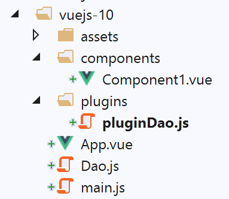
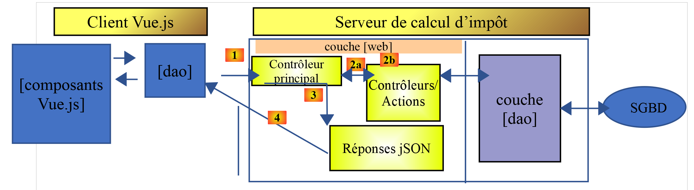
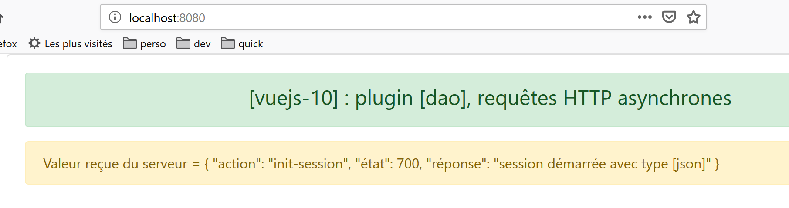

12. المشروع [vuejs-10]: المكون الإضافي [dao]، الطلبات غير المتزامنة HTTP
هيكل المشروع [vuejs-10] هو كما يلي:

يُظهر مشروع [vuejs-10] مكونًا يقوم بإرسال طلب HTTP إلى خادم بعيد. والبنية المستخدمة هي كما يلي:

يستخدم المكون [Vue.js] الطبقة [dao] للتواصل مع خادم حساب الضريبة.
12.1. تثبيت التبعيات
يستخدم التطبيق [vuejs-10] المكتبة [axios] لإجراء الاستعلامات غير المتزامنة إلى خادم حساب الضرائب. يتعين علينا تثبيت هذه التبعية:

- في [4-5]، السطر الذي تمت إضافته إلى ملف [package.json] بعد تثبيت المكتبة [axios] [1-3]؛
12.2. الفئة [Dao]
الفئة [Dao] هي تلك التي تم تطويرها في الفقرة [La classe Dao]. نعيد ذكرها هنا للتذكير:
'use strict';
// الاستيرادات
import qs from 'qs'
// فئة [Dao]
class Dao {
// منشئ
constructor(axios) {
this.axios = axios;
// ملف تعريف ارتباط الجلسة
this.sessionCookieName = "PHPSESSID";
this.sessionCookie = '';
}
// بدء الجلسة
async initSession() {
// خيارات الطلب HHTP [get /main.php?action=init-session&type=json]
const options = {
method: "GET",
// معلمات URL
params: {
action: 'init-session',
type: 'json'
}
};
// تنفيذ الاستعلام HTTP
return await this.getRemoteData(options);
}
async authentifierUtilisateur(user, password) {
// خيارات الاستعلام HHTP [post /main.php?action=authentifier-utilisateur]
const options = {
method: "POST",
headers: {
'Content-type': 'application/x-www-form-urlencoded',
},
// نص POST
data: qs.stringify({
user: user,
password: password
}),
// معلمات URL
params: {
action: 'authentifier-utilisateur'
}
};
// تنفيذ الاستعلام HTTP
return await this.getRemoteData(options);
}
async getAdminData() {
// خيارات الاستعلام HHTP [get /main.php?action=get-admindata]
const options = {
method: "GET",
// معلمات الاستعلام URL
params: {
action: 'get-admindata'
}
};
// تنفيذ الاستعلام HTTP
const data = await this.getRemoteData(options);
// النتيجة
return data;
}
async getRemoteData(options) {
// لملف تعريف الارتباط الخاص بالجلسة
if (!options.headers) {
options.headers = {};
}
options.headers.Cookie = this.sessionCookie;
// تنفيذ الاستعلام HTTP
let response;
try {
// استعلام غير متزامن
response = await this.axios.request('main.php', options);
} catch (error) {
// المعلمة [error] هي حالة استثناء - وقد تتخذ أشكالًا متنوعة
if (error.response) {
// رد الخادم موجود في [error.response]
response = error.response;
} else {
// يتم إعادة إرسال الخطأ
throw error;
}
}
// الاستجابة هي مجمل استجابة الخادم HTTP (رؤوس HTTP + الاستجابة نفسها)
// يتم استرداد ملف تعريف ارتباط الجلسة إن وجد
const setCookie = response.headers['set-cookie'];
if (setCookie) {
// setCookie عبارة عن مصفوفة
// يتم البحث عن ملف تعريف ارتباط الجلسة في هذا المصفوفة
let trouvé = false;
let i = 0;
while (!trouvé && i < setCookie.length) {
// نبحث عن ملف تعريف ارتباط الجلسة
const results = RegExp('^(' + this.sessionCookieName + '.+?);').exec(setCookie[i]);
if (results) {
// يتم حفظ ملف تعريف ارتباط الجلسة
// eslint-disable-next-line require-atomic-updates
this.sessionCookie = results[1];
// تم العثور عليه
trouvé = true;
} else {
// العنصر التالي
i++;
}
}
}
// رد الخادم موجود في [response.data]
return response.data;
}
}
// تصدير الفئة
export default Dao;
لا يستخدم المشروع [vuejs-10] سوى الطريقة غير المتزامنة [initSession] الواردة في الأسطر 18-30. تجدر الإشارة إلى أن الفئة [Dao] يتم إنشاء مثيل لها باستخدام المعلمة [axios]، في السطر 10، وهي معلمة يتم تهيئتها بواسطة الكود المستدعي. وسيكون هذا الكود المستدعي هنا هو البرنامج النصي [./main.js].
12.3. المكوّن الإضافي [pluginDao]
المكوّن الإضافي [pluginDao] هو كما يلي:
export default {
install(Vue, dao) {
// إضافة خاصية [$dao] إلى فئة Vue
Object.defineProperty(Vue.prototype, '$dao', {
// عند الإشارة إلى Vue.$dao، يتم عرض المعلمة الثانية [dao]
get: () => dao,
})
}
}
إذا تذكرنا الشرح المقدم للمكوّن الإضافي [event-bus]، نلاحظ أن المكوّن الإضافي [pluginDao] ينشئ في الفئة/الدالة [Vue] خاصية جديدة تسمى [$dao]. وستكون قيمة هذه الخاصية (وهذا ما يتعين إثباته لاحقًا) هي الكائن الذي يتم تصديره بواسطة البرنامج النصي [./Dao]، أي الفئة [Dao] السابقة.
12.4. النص البرمجي الرئيسي [main.js]
فيما يلي كود البرنامج النصي الرئيسي [main.js]:
// عمليات الاستيراد
import Vue from 'vue'
import App from './App.vue'
import axios from 'axios';
// المكونات الإضافية
import BootstrapVue from 'bootstrap-vue'
Vue.use(BootstrapVue);
// bootstrap
import 'bootstrap/dist/css/bootstrap.css'
import 'bootstrap-vue/dist/bootstrap-vue.css'
// طبقة [dao]
import Dao from './Dao';
// تكوين axios
axios.defaults.timeout = 2000;
axios.defaults.baseURL = 'http://localhost/php7/scripts-web/impots/version-14';
axios.defaults.withCredentials = true;
// إنشاء مثيل الطبقة [dao]
const dao = new Dao(axios);
// المكوّن الإضافي [dao]
import pluginDao from './plugins/dao'
Vue.use(pluginDao, dao)
// التكوين
Vue.config.productionTip = false
// إنشاء مثيل للمشروع [App]
new Vue({
render: h => h(App),
}).$mount('#التطبيق')
النص البرمجي [main.js]:
- يقوم بإنشاء مثيل للطبقة [dao] في الأسطر 14-21؛
- يدمج المكون الإضافي [pluginDao] في الأسطر 24-25؛
- السطر 15: يتم استيراد الفئة [Dao]؛
- السطور 17-18: يتم تكوين الكائن [axios] الذي ينفذ الاستعلامات HTTP. يتم استيراد هذا الكائن في السطر 4؛
- السطر 17: تعريف كائن [timeout] لمدة ثانيتين؛
- السطر 18: كائن URL الخاص بخادم حساب الضريبة؛
- السطر 19: للتمكن من تبادل ملفات تعريف الارتباط مع الخادم؛
- السطران 24-25: استخدام المكون الإضافي [pluginDao]
- السطر 24: استيراد المكون الإضافي؛
- السطر 25: دمج المكون الإضافي. نلاحظ أن المعلمة الثانية لطريقة [Vue.use] هي مرجع الطبقة [dao] المُعرَّفة في السطر 21. ولهذا السبب، ستشير الخاصية [Vue.$dao] إلى الطبقة [dao] في جميع مثيلات الفئة/الدالة [Vue]، أي في جميع المكونات [Vue.js]؛
12.5. الطريقة الرئيسية [App.vue]
فيما يلي كود العرض الرئيسي [App]:
<template>
<div class="container">
<b-card>
<!-- رسالة -->
<b-alert show variant="success" align="center">
<h4>[vuejs-10] : plugin [dao], requêtes HTTP asynchrones</h4>
</b-alert>
<!-- مكون يقوم بإرسال طلب غير متزامن إلى خادم حساب الضرائب-->
<Component1 @error="doSomethingWithError" @endWaiting="endWaiting" @beginWaiting="beginWaiting" />
<!-- عرض أي خطأ محتمل -->
<b-alert show
variant="danger"
v-if="showError">Evénement [error] intercepté par [App]. Valeur reçue = {{error}}</b-alert>
<!-- رسالة انتظار مع مؤشر الدوران -->
<b-alert show v-if="showWaiting" variant="light">
<strong>Requête au serveur de calcul d'impôt en cours...</strong>
<b-spinner variant="primary" label="Spinning"></b-spinner>
</b-alert>
</b-card>
</div>
</template>
<script>
import Component1 from "./components/Component1";
export default {
name: "app",
// حالة المكون
data() {
return {
// التحكم في مؤشر الانتظار
showWaiting: false,
// التحكم في عرض الخطأ
showError: false,
// الخطأ الذي تم اعتراضه
error: {}
};
},
// المكونات المستخدمة
components: {
Component1
},
// طرق إدارة الأحداث
methods: {
// بدء حالة الانتظار
beginWaiting() {
// يتم عرض حالة الانتظار
this.showWaiting = true;
// إخفاء رسالة الخطأ
this.showError = false;
},
// نهاية الانتظار
endWaiting() {
// إخفاء حالة الانتظار
this.showWaiting = false;
},
// معالجة الخطأ
doSomethingWithError(error) {
// يُشار إلى حدوث خطأ
this.error = error;
// عرض رسالة الخطأ
this.showError = true;
}
}
};
</script>
تعليقات
- السطر 9: [Component1] هو المكون الذي يقوم بإجراء الاستعلام غير المتزامن HTTP. ويمكنه إصدار ثلاثة أحداث:
- [beginWaiting]: سيتم إجراء الطلب. يجب عرض رسالة انتظار للمستخدم؛
- [endWaiting]: انتهى الطلب. يجب إنهاء حالة الانتظار؛
- [error]: فشل الطلب. يجب عرض رسالة خطأ؛
- الأسطر 10-13: التنبيه الذي يعرض رسالة الخطأ المحتملة. يتم التحكم فيه بواسطة المتغير المنطقي [showError] في السطر 33. يعرض الخطأ الموجود في السطر 35؛
- الأسطر 14-18: التنبيه الذي يعرض رسالة الانتظار مع مؤشر الدوران. يتم التحكم فيه بواسطة المتغير المنطقي [showWaiting] في السطر 47؛
- الأسطر 45-50: [beginWaiting] هي الطريقة التي يتم تنفيذها عند استلام الحدث [beginWaiting]. وهي تعرض رسالة الانتظار (السطر 47) وتخفي رسالة الخطأ (السطر 49) في حالة ظهورها نتيجة لعملية سابقة؛
- الأسطر 52-55: [endWaiting] هي الطريقة التي يتم تنفيذها عند استلام الحدث [endWaiting]. وهي تخفي رسالة الانتظار (السطر 54)؛
- الأسطر 57-62: [doSomethingWithError] هي الطريقة التي يتم تنفيذها عند استلام الحدث [error]. وهي تسجل الخطأ المستلم (السطر 59) وتعرض رسالة الخطأ (السطر 61)؛
12.6. المكون [Component1]
فيما يلي كود المكون [Component1]:
<template>
<b-row>
<b-col>
<b-alert show
variant="warning"
v-if="showMsg">Valeur reçue du serveur = {{data}}</b-alert>
</b-col>
</b-row>
</template>
<script>
export default {
name: "component1",
// حالة المكون
data() {
return {
showMsg: false
};
},
// طرق إدارة الأحداث
methods: {
// معالجة البيانات الواردة من الخادم
doSomethingWithData(data) {
// يتم تسجيل البيانات المستلمة
this.data = data;
// يتم عرضها
this.showMsg = true;
}
},
// تم إنشاء المكون للتو
created() {
// يتم تهيئة الجلسة مع الخادم - طلب غير متزامن
// يتم استخدام الوعد الذي تم إرجاعه بواسطة طرق الطبقة [dao]
// يتم الإبلاغ عن بدء العملية
this.$emit("beginWaiting");
// يتم تشغيل العملية غير المتزامنة
this.$dao
// يتم هنا تهيئة جلسة عمل jSON مع خادم حساب الضريبة
.initSession()
// طريقة تعالج البيانات المستلمة في حالة النجاح
.then(data => {
// تتم معالجة البيانات المستلمة
this.doSomethingWithData(data);
})
// طريقة تعالج الخطأ في حالة حدوث خطأ
.catch(error => {
// يتم إحالة الخطأ إلى المكون الأصلي
this.$emit("error", error.message);
}).finally(() => {
// نهاية فترة الانتظار
this.$emit("endWaiting");
})
}
};
</script>
تعليقات
- الأسطر 4-6: يتكون المكون من تنبيه واحد يعرض القيمة التي يرسلها خادم حساب الضريبة، وذلك فقط في حالة نجاح الاستعلام HTTP. يتم التحكم في هذا التنبيه بواسطة المتغير المنطقي [showMsg] في السطر 17؛
- الأسطر 31-53: يتم تنفيذ الاستعلام HTTP فور إنشاء المكون. لذلك، يتم وضع كوده في الأسلوب [created] في السطر 31؛
- السطر 35: يتم إخطار المكون الأصلي بأن الطلب غير المتزامن على وشك البدء؛
- الأسطر 37-39: يتم تنفيذ الأسلوب [this.$dao.initSession]. وهو يقوم بتهيئة جلسة jSON مع خادم حساب الضرائب. والنتيجة الفورية لهذا الأسلوب هي [Promise]؛
- الأسطر 41-44: يتم تنفيذ هذا الكود عندما يعرض الخادم نتيجته دون أخطاء. توجد نتيجة الخادم في [data]. في السطر 43، يُطلب من الأسلوب [doSomethingWithData] معالجة هذه النتيجة؛
- الأسطر 46-49: يتم تنفيذ هذا الكود في حالة حدوث خطأ أثناء تنفيذ الاستعلام. في السطر 48، يتم إخطار المكون الأصلي بحدوث خطأ ويتم تمرير رسالة الخطأ [error.message] إليه؛
- الأسطر 49-52: يتم تنفيذ هذا الكود في جميع الحالات. يتم إخطار المكون الأصلي بأن الطلب HTTP قد اكتمل؛
- الأسطر 23-28: الطريقة [doSomethingWithData] هي الطريقة المكلفة بمعالجة البيانات [data] المرسلة من الخادم. في السطر 25، يتم تسجيل هذه البيانات، وفي السطر 27 يتم عرضها؛
12.7. تنفيذ المشروع

إذا لم يكن خادم حساب الضرائب قيد التشغيل عند تشغيل المشروع، فسنحصل على النتيجة التالية:

لنقم بتشغيل الخادم [Laragon] (انظر https://tahe.developpez.com/tutoriels-cours/php7) ونعيد تحميل الصفحة أعلاه. تكون النتيجة عندئذٍ كما يلي:

ملاحظة: نستخدم هنا الإصدار 14 من خادم حساب الضرائب المحدد في https://tahe.developpez.com/tutoriels-cours/php7.